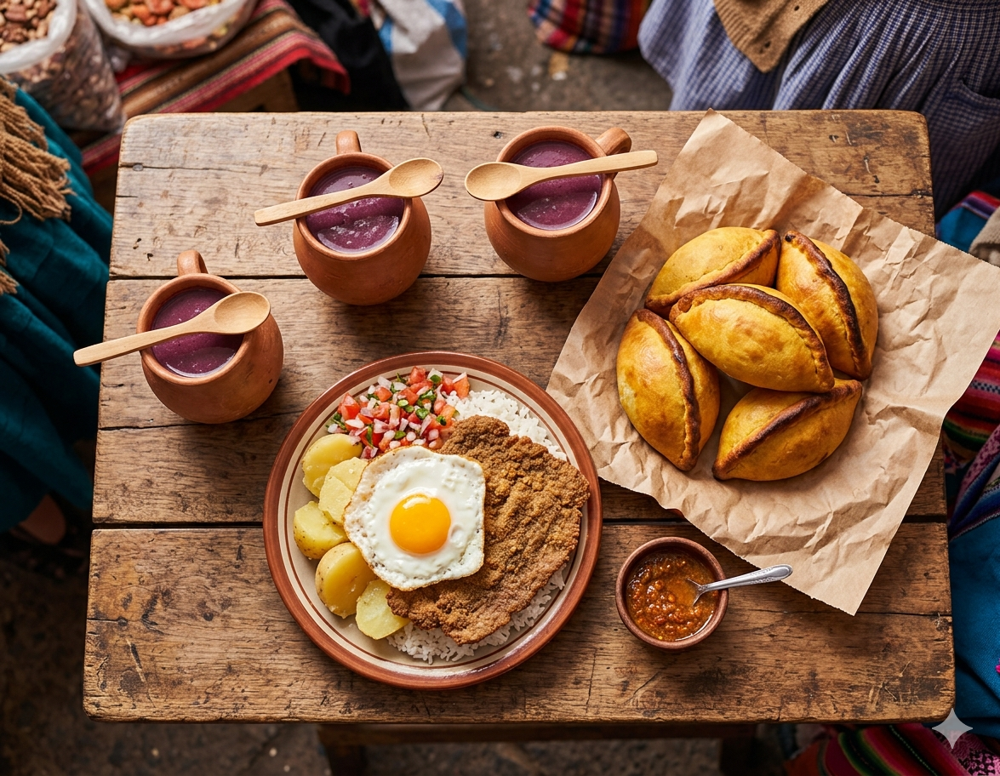

Gastronomía de Bermejo: qué probar antes de volver

Muchos orientales cruzan a Bermejo a comprar y nunca prueban la comida del lado de allá. Es un error. Por menos de 30 bolivianos (~$3.500 ARS) tenés almuerzos enteros que en cualquier ciudad argentina serían el doble. Te dejo lo que vale la pena, dónde lo encontrás y qué evitar.
Lo imperdible
Api con buñuelo
Bebida caliente espesa de maíz morado y especias (canela, clavo, anís), acompañada de una masa frita. Es el desayuno boliviano de altura, pero en Bermejo lo encontrás todo el año en el mercado central, sector comida, primera fila. Precio: 8–12 BOB el api + buñuelo. Buscalo entre las 7 y las 10 de la mañana.
Salteñas
La empanada boliviana: jugosa por dentro, masa dorada por fuera, llena de carne, papa, arvejas y ají amarillo. Las venden a media mañana, calientes. Ojo: comerlas requiere técnica para no chorrearse. Precio: 6–10 BOB cada una. Dónde: "Salteñería La Casona" y el puesto frente a la terminal.
Silpancho
Plato fuerte cochabambino que se hace común en todo Bolivia: arroz + papa + milanesa empanada finita + huevo frito + ensalada fresca. Es el almuerzo perfecto después de cargar bolsas durante tres horas. Precio: 20–28 BOB. Dónde: cualquier comedor del mercado, segunda fila desde el ingreso.
Sopa de maní
Crema espesa de maní molido con carne, papa y un toque de ají. Servida con fideo o arroz. Suena raro, es deliciosa. Llena para todo el día. Precio: 15–20 BOB. Dónde: los comedores familiares del mercado a partir de las 11:30.
Pique macho
Plato típico para compartir: carne en cubos, salchicha, papas fritas, tomate, cebolla y ají rocoto. Pedilo si vas en grupo: una porción para dos personas alcanza y sobra. Precio: 50–70 BOB para dos. Dónde: "Doña Eufrasia" y restaurantes en torno a la plaza principal.
Lo dulce
El helado de canela de los carros del mercado es una rareza local que vale probar (5 BOB). El pasankalla (pochoclo dulce gigante con cobertura de azúcar) también, sobre todo si llevás chicos.
Lo que evito
- Pescado en mercado a último horario. No hay cadena de frío confiable, mejor pescado a la mañana o ni probar.
- Carrito de comida en la chalana del lado boliviano. Está expuesto al sol toda la jornada.
- Bebidas envasadas no refrigeradas. Buscá las heladeras.
Tres lugares con onda
No son secretos, los conocen los locales:
- Restaurante Doña Eufrasia — comida casera, el silpancho de referencia.
- El Rincón Camba — más cercano al estilo del oriente boliviano: majadito, locro.
- La Casona del Sabor — buen lugar para una cena tranquila si te quedás a dormir.
Si solo tenés tiempo para una cosa
Si entrás a Bermejo a las 9 hs y volvés a las 13 hs, no te vas sin probar api con buñuelo de desayuno y una salteña a media mañana. 18 BOB en total (~$2.200 ARS) y te llevás el sabor del lugar.